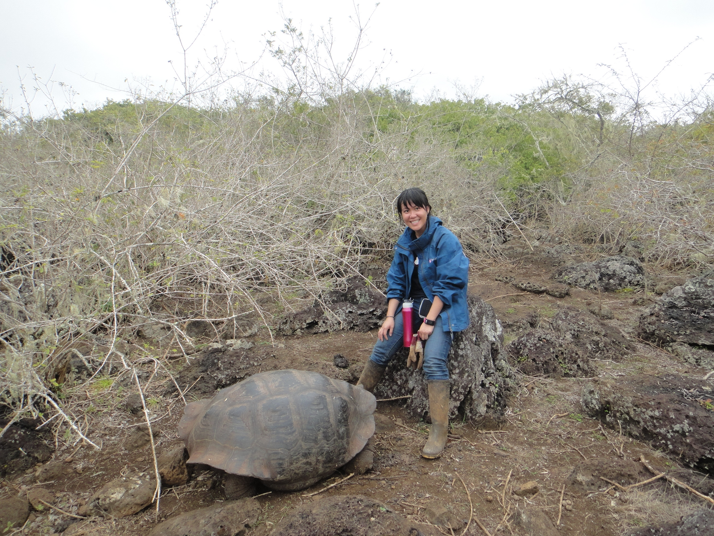

About Me

Hello! My name is Aelly. I am a full stack web developer. Technology is one of my top interests. I can help you prompt your business or provide a solution to imporve your business process.
Besides technoloy, traveling and painting are my other interests. The most facinating place I have been is the Galaposgos Islands.
Connect with Me